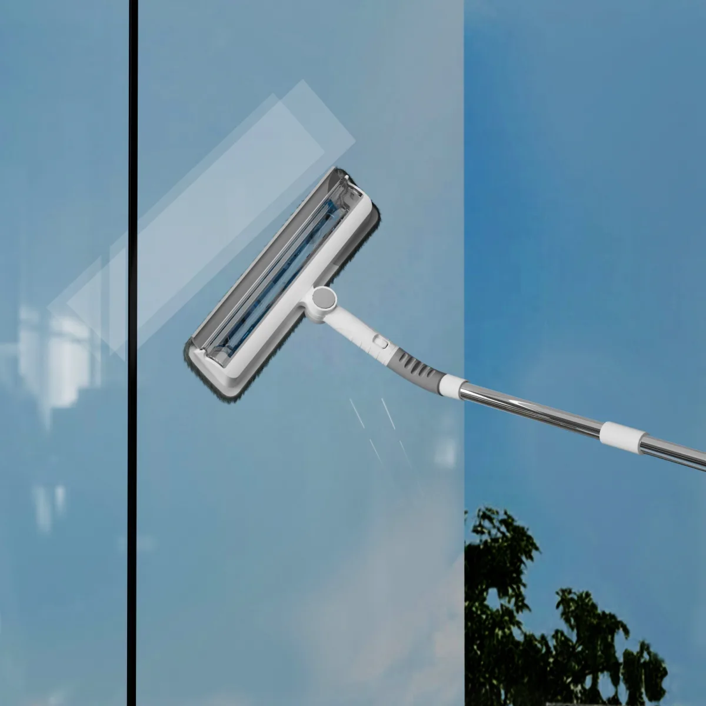
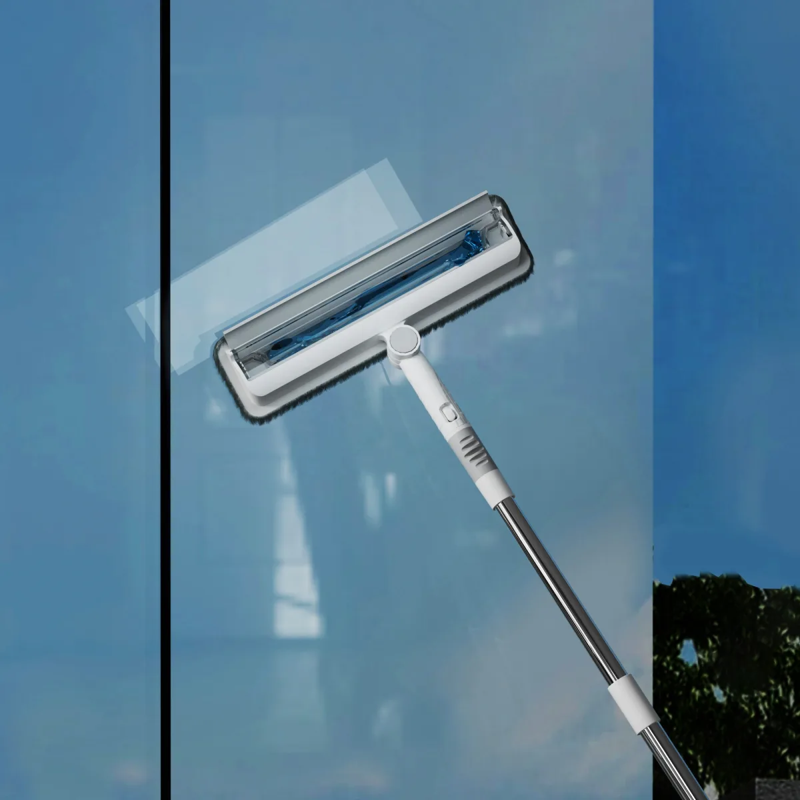
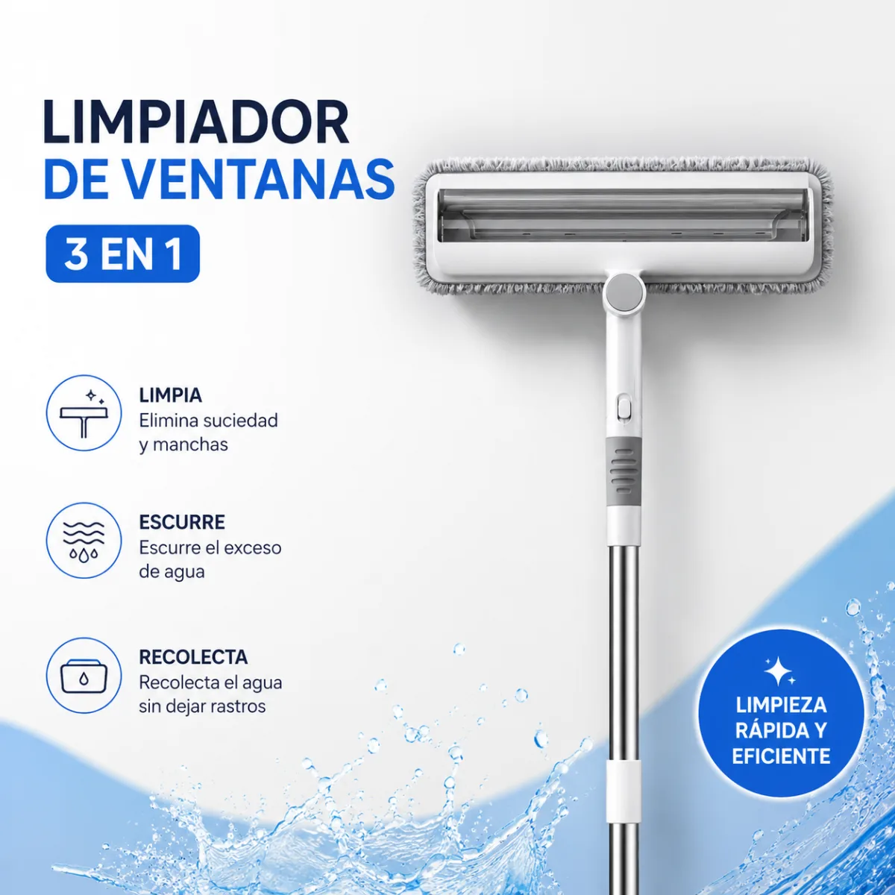
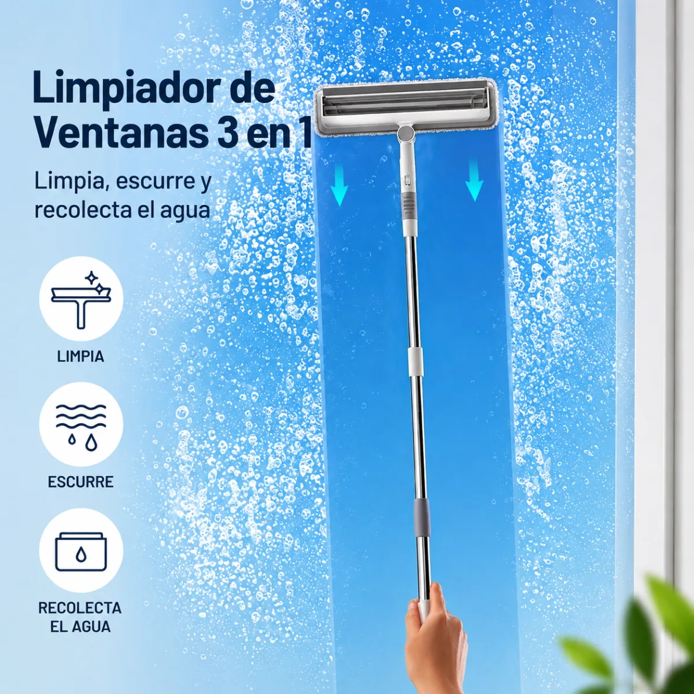
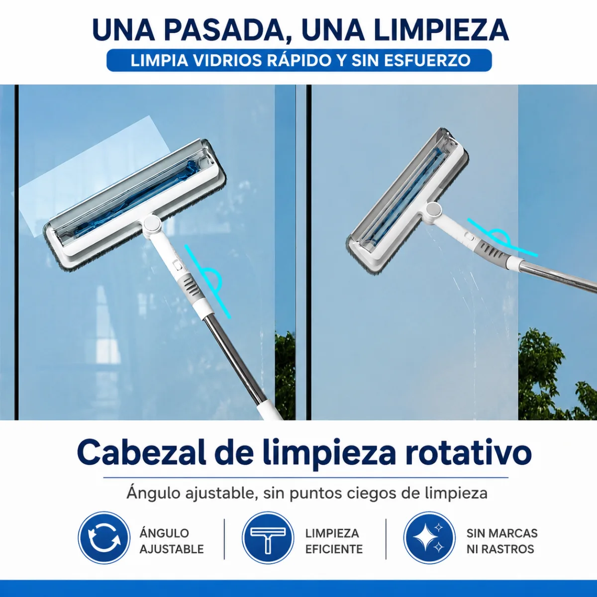
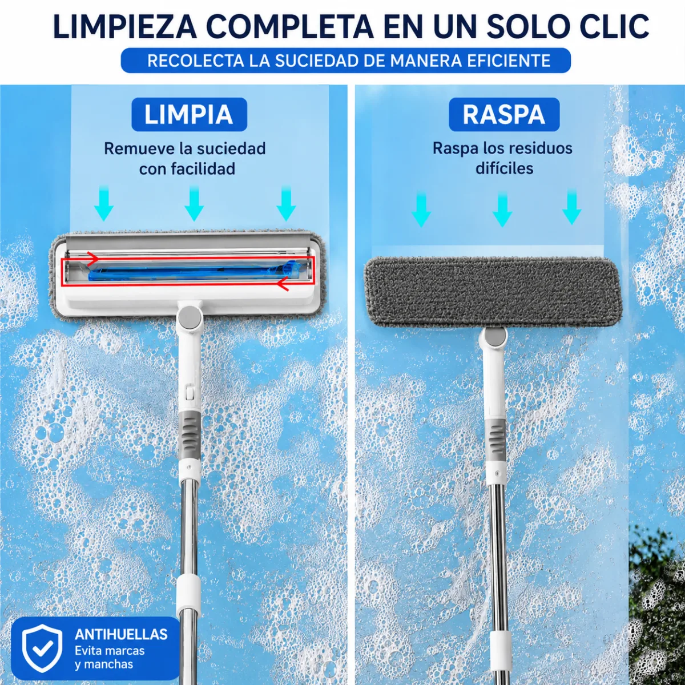
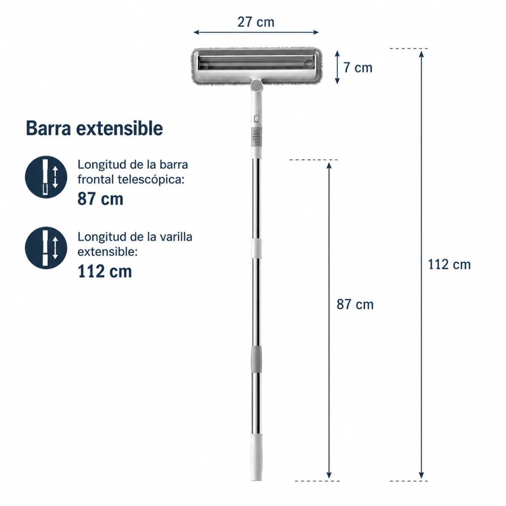

Barra extensible 87 · 112 cm · Cabezal rotativo
Pago 100% seguro · Envío gratis · Protección al comprador
Mantené tus vidrios impecables de forma rápida y sencilla con este práctico limpiador de ventanas 3 en 1. Diseñado para limpiar, escurrir y recolectar el agua en una sola pasada, permite obtener resultados profesionales sin dejar marcas ni rastros.
Su cabezal giratorio facilita el acceso a rincones difíciles y superficies amplias, mientras que la barra extensible permite alcanzar zonas altas sin necesidad de escaleras.
Beneficios: reduce el tiempo de limpieza, evita el uso excesivo de productos químicos, alcanza zonas altas sin esfuerzo, limpia y seca en una sola pasada, no deja rayas ni marcas de agua, y es reutilizable y fácil de lavar.
Ideal para: ventanas, ventanales, espejos, mamparas de baño, puertas de vidrio, azulejos y superficies lisas del hogar y la oficina.
Medidas: longitud mínima 87 cm · longitud máxima 112 cm · cabezal de 27 cm de largo x 7 cm de ancho.
¿Qué incluye? 1 limpiador de ventanas 3 en 1 · 1 paño de microfibra · 1 barra telescópica extensible.
¿El paño se puede lavar? Sí, es reutilizable y puede lavarse para múltiples usos.
¿Sirve para vidrios altos? Sí, gracias a su barra extensible alcanza hasta 112 cm de longitud.
¿Deja marcas en el vidrio? No. El escurridor de goma ayuda a retirar el exceso de agua dejando la superficie limpia y sin rastros.
¿Sirve para espejos y mamparas? Sí, es ideal para cualquier superficie lisa como espejos, vidrios, mamparas y azulejos.